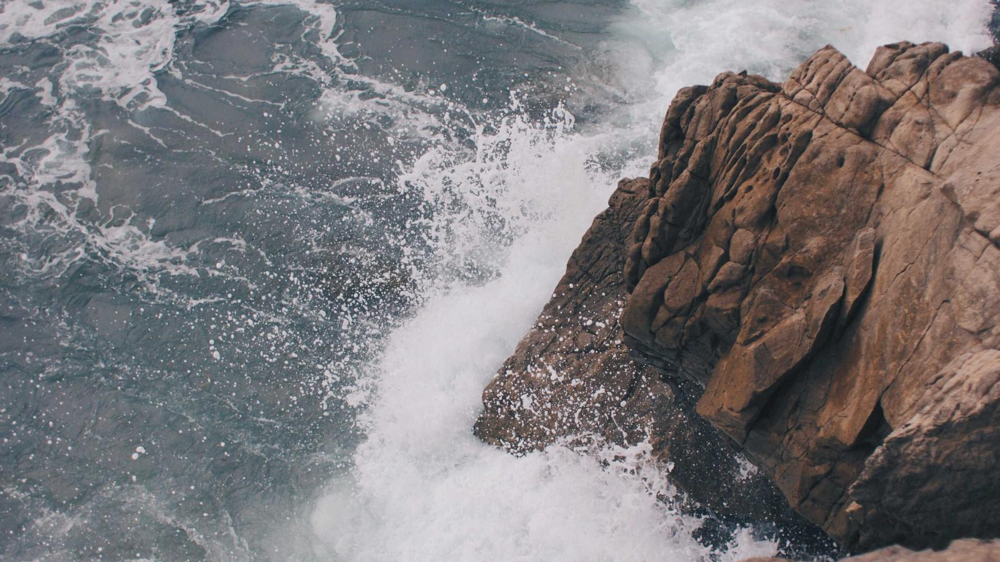

Good Neighbour Exchange
Two days of donations, then a free store day. Everything costs nothing and nobody is asked why they came.
Next exchange
We hold the Exchange each summer at 4048 N. Bartlett Avenue. Write to office@northshorepres.org and we will tell you when the dates are set.
Donations
Gently used and in working order — if you would hand it to a friend, we would love to have it.
Kitchen gadgets, small furniture, lamps, music equipment, home décor, costume jewelry, books, office supplies, hand tools, art supplies, bins and baskets, toys and games, pet supplies.
Clothing and shoes, large appliances, fine jewelry, medications, firearms, live plants or animals, power tools, automotive items.
North Shore Presbyterian with Catch the Wave Shorewood and the Shorewood Waters Project.